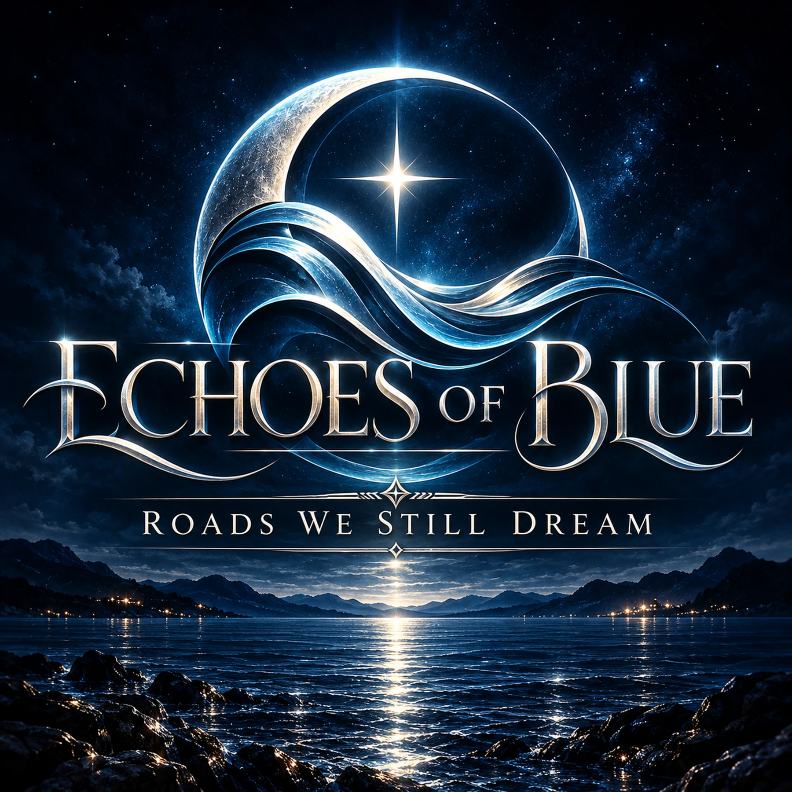

Music for the roads we travel
Melodic rock, atmospheric sounds and voices that meet in stories about life, love and dreams. Every song is a new chapter.

ALBUM · 2026
Roads We Still Dream
Melodies and stories that stay with us.
Selected songs
- Echoes of Blue
- The Same Day, Different Eyes
- A Thousand Ways to Stay
- Nothing Left to Prove
- Roads We Still Dream